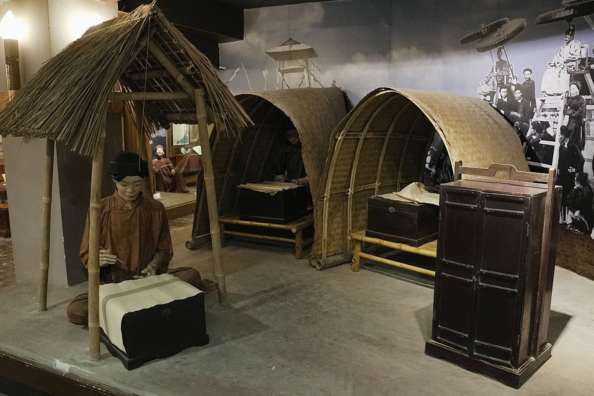
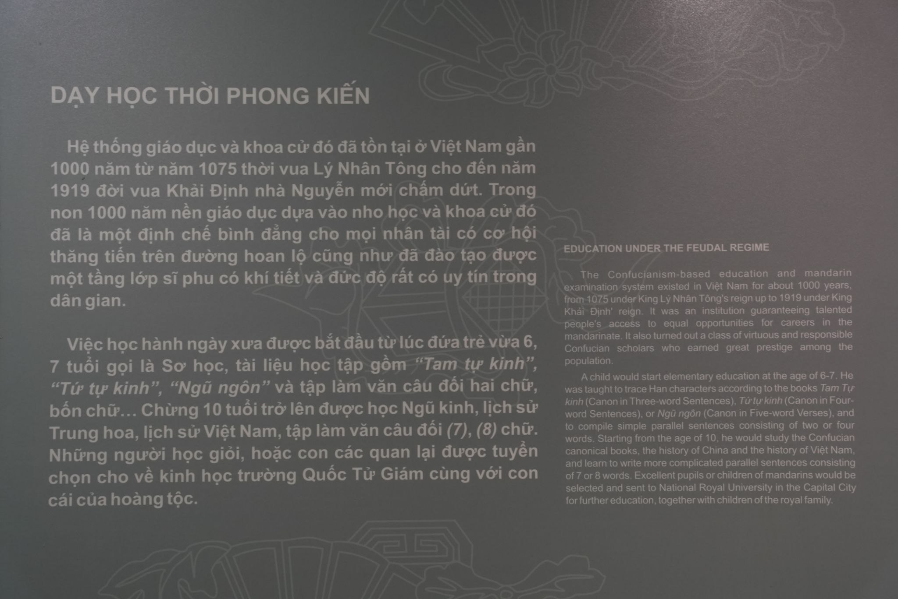
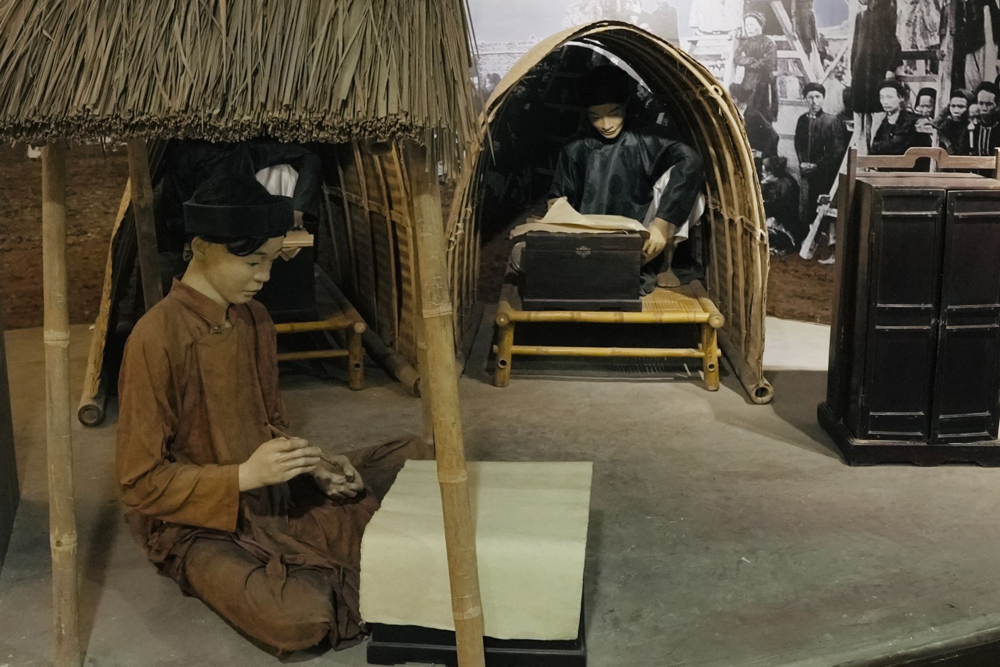

Trong bài
Trước khi tên tuổi được ghi trên bảng vàng, một sĩ tử phải trải qua nhiều năm đèn sách, vượt qua những kỳ thi khắt khe và đối diện với không ít áp lực. Từ căn lều chõng giữa trường thi đến khoảnh khắc xướng danh, hành trình ấy phản ánh không chỉ con đường học vấn mà còn cả một nét văn hóa đặc biệt của xã hội Việt Nam xưa.
Hành trình của sĩ tử bắt đầu từ những năm đèn sách
Trong xã hội Việt Nam thời phong kiến, con đường học hành và thi cử giữ một vị trí quan trọng. Đối với nhiều gia đình, việc học không chỉ giúp con người tiếp thu tri thức mà còn mở ra cơ hội bước vào đời sống quan trường. Vì thế, hình ảnh sĩ tử miệt mài bên sách vở đã trở thành một phần quen thuộc trong đời sống văn hóa của nhiều thế hệ.

Để bước vào trường thi, người học phải dành nhiều năm chuẩn bị. Việc học chủ yếu xoay quanh kinh điển, sử sách, thơ văn và những kiến thức được quy định trong hệ thống giáo dục đương thời. Con đường ấy không có những lớp học hiện đại, giáo trình in hàng loạt hay phương tiện hỗ trợ như ngày nay. Phần lớn việc học diễn ra trong không gian gia đình, tại các lớp học của thầy đồ hoặc những nơi dành cho việc học hành.
Một sĩ tử muốn đi xa trên con đường khoa cử phải có sự kiên trì rất lớn. Sách vở khi ấy không phải thứ dễ dàng tiếp cận với tất cả mọi người. Người học phải dành nhiều thời gian ghi nhớ kinh điển, luyện chữ, làm văn và rèn cách lập luận theo yêu cầu của từng kỳ thi.
Đằng sau một người bước vào trường thi là nhiều năm chuẩn bị. Có người bắt đầu học từ khi còn nhỏ, tiếp tục theo đuổi con đường này trong nhiều năm và có thể tham dự nhiều khoa thi mới đạt được kết quả mong muốn.
Chính quá trình ấy tạo nên hình ảnh lều chõng quen thuộc trong văn hóa Việt Nam. “Lều” là nơi che tạm cho người đi thi, còn “chõng” là chiếc giường nhỏ dùng để ngồi hoặc nằm. Với sĩ tử, lều chõng không chỉ là vật dụng phục vụ việc thi cử mà còn trở thành biểu tượng cho cả một hành trình học tập và khát vọng công danh.
Nhìn từ hôm nay, những vật dụng ấy có vẻ đơn sơ. Nhưng trong bối cảnh xã hội xưa, chúng gắn với một cuộc cạnh tranh trí tuệ rất nghiêm túc. Mỗi lần mang lều chõng đến trường thi cũng là một lần người học đặt những năm tháng đèn sách của mình trước sự đánh giá của trường thi.
Sĩ tử và những ngày trường thi đầy áp lực

Sau nhiều năm học tập, thử thách thực sự bắt đầu khi sĩ tử bước vào kỳ thi. Hệ thống khoa cử thời phong kiến trải qua nhiều thay đổi theo từng triều đại, nhưng nhìn chung các kỳ thi đều đòi hỏi người dự thi phải có kiến thức, khả năng làm bài và sự chuẩn bị kỹ lưỡng.
Trường thi không phải một lớp học thông thường. Đó là nơi hàng nghìn người cùng tập trung để tìm kiếm cơ hội bước tiếp trên con đường công danh. Mỗi người có một chỗ ngồi riêng, phải tuân thủ những quy định nghiêm ngặt và hoàn thành bài thi trong khoảng thời gian quy định.
Hình ảnh lều chõng vì thế thường đi cùng những câu chuyện về trường thi. Người đi thi phải tự chuẩn bị những vật dụng cần thiết, tìm chỗ trong khu vực thi và trải qua nhiều ngày trong điều kiện không hề dễ dàng.
Từ trường thi đến bảng vàng: Khoảnh khắc đổi đời
Sau những ngày chờ đợi, kết quả được công bố. Với những người đỗ đạt, đây là khoảnh khắc đáng nhớ nhất trong hành trình. Tên tuổi được xướng lên, kết quả được ghi nhận và người học chính thức bước qua một cánh cửa mới.
Khái niệm bảng vàng gắn với chính niềm vinh dự ấy. Trong ký ức văn hóa Việt Nam, bảng vàng không đơn thuần là nơi ghi danh những người thi đỗ. Nó tượng trưng cho thành quả của nhiều năm học tập và là sự ghi nhận đối với người đã vượt qua kỳ thi.
Đối với một sĩ tử, khoảnh khắc được xướng danh có thể đánh dấu sự thay đổi lớn trong cuộc đời. Từ một người dành phần lớn thời gian cho sách vở, họ có thể bước vào con đường làm quan và tham gia vào bộ máy quản lý của nhà nước phong kiến.
Những người đỗ đạt cao còn được hưởng nghi lễ vinh quy. Hình ảnh người đỗ cưỡi ngựa trở về quê, được người dân và gia đình chào đón đã trở thành một biểu tượng quen thuộc của truyền thống trọng chữ nghĩa.
Lều chõng và bảng vàng trong ký ức văn học Việt Nam
Ngày nay, trường thi phong kiến đã trở thành một phần của quá khứ. Tuy nhiên, hình ảnh lều chõng, trường thi và bảng vàng vẫn xuất hiện trong sách vở, tác phẩm nghệ thuật và không gian trưng bày văn hóa.

Trong văn học trung đại, hình ảnh người học và con đường công danh thường gắn với nhiều cung bậc cảm xúc. Có niềm vui của người đỗ đạt, niềm tự hào của gia đình, nhưng cũng có nỗi thất vọng, sự chờ đợi và những trăn trở về công danh.
Bởi vậy, câu chuyện về sĩ tử không chỉ giúp chúng ta hiểu về một hình thức thi cử trong quá khứ. Nó còn cho thấy những giá trị từng được xã hội coi trọng: việc học, chữ nghĩa, tài năng và khát vọng khẳng định bản thân.
Không gian trưng bày về đời sống khoa cử cũng giúp những hình ảnh ấy trở nên trực quan hơn. Những vật dụng gắn với trường thi, hình ảnh người đi học, cảnh lều chõng hay không khí vinh quy có thể đưa người xem trở lại một xã hội mà việc học và thi cử giữ vai trò rất lớn.
Đặc biệt, khi đứng trước hình ảnh những sĩ tử trong trường thi, người xem hôm nay có thể nhận ra một điều quen thuộc: dù hoàn cảnh đã thay đổi, tâm lý trước một kỳ thi vẫn có những điểm tương đồng. Đó là sự hồi hộp, kỳ vọng, áp lực và mong muốn được ghi nhận sau những nỗ lực dài ngày.
Từ một căn lều đơn sơ đến bảng vàng, hành trình ấy vì thế không chỉ kể câu chuyện về quá khứ. Nó còn đặt ra một câu hỏi về giá trị của việc học: con người học để đạt được danh vị, để thay đổi cuộc đời hay để tìm kiếm tri thức?
Có lẽ mỗi thời đại sẽ có một câu trả lời khác nhau. Nhưng những dấu tích của khoa cử vẫn giúp chúng ta hiểu thêm về cách người Việt từng nhìn nhận tri thức và con đường lập thân.
Từ những năm đèn sách, chiếc lều chõng đơn sơ đến khoảnh khắc được ghi tên trên bảng vàng, hành trình của một sĩ tử là câu chuyện về học vấn, khát vọng và cả những thử thách của người xưa. Qua những dấu tích còn lại, ký ức về khoa cử tiếp tục giúp chúng ta hiểu hơn về đời sống và văn học trung đại Việt Nam.
Bảo tàng Văn học Việt Nam